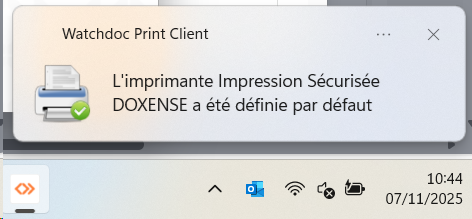
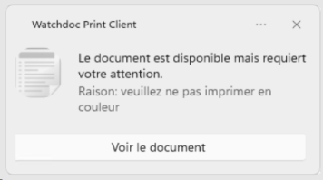
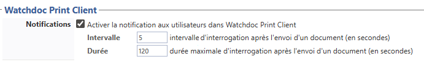
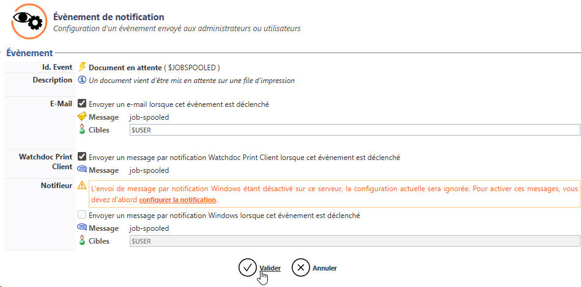
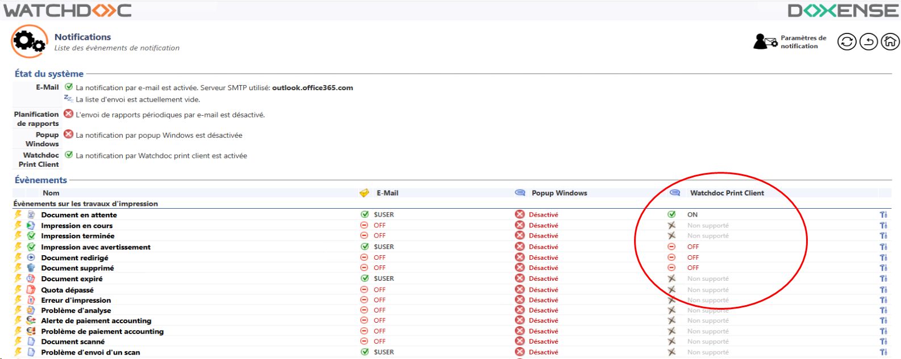
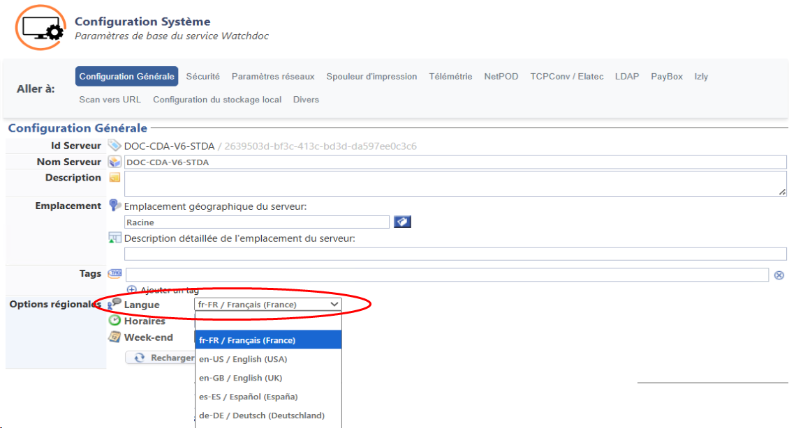
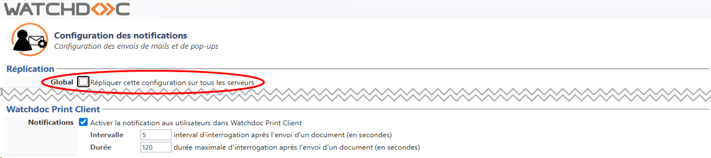

Principe
Vous pouvez configurer des notifications permettant d'informer les utilisateurs des différentes actions lancées depuis WCP for Windows® (travaux d'impression envoyés, en attente, ou imprimés via l'application).
Ces notifications peuvent également concerner les modifications de configuration telles que le choix d'une file par défaut ou d'un emplacement.
Ces notifications sont adressées à l'utilisateur sous des formes différentes en fonction du système d'exploitation qui équipe leur poste de travail.
Lorsque la notification est trop longue, elle est tronquée.
Les liens présents dans la notification sont cliquables :


Exemple de notifications WPC sous MS Windows 11
Procédure
Configurer les notifications Watchdoc Print Client
Pour configurer les notifications de WPC :
-
depuis le Menu principal, section Configuration, cliquez sur Configuration avancée puis Notifications ;
-
dans l'interface Configuration avancée, cliquez sur Notifications ;
-
dans l'interface Notifications, cliquez sur Paramètres de notification ;
-
configurez la notification (cf. Configurer la notification) en cochant également la case Notifications WPC : activer la notification aux utilisateurs dans WPC :

-
validez la configuration des notifications.
Configurer les événements pour Watchdoc Print Client
Pour configurer les événements de WPC :
-
depuis le Menu principal, section Configuration, cliquez sur Configuration avancée ;
-
dans l'interface Configuration avancée, cliquez sur Notifications ;
-
dans la Configuration des notifications, liste Evénements, cliquez sur le bouton pour éditer l'événement pour lequel vous souhaitez déclencher une notification ;
La mention "Non supportée" signifie que la notification n'est pas destinée à WPC.
-
dans l'interface Evénement de notification, cochez la case E-mail : envoyer un e-mail lorsque cet événement est déclenché et vérifiez que la cible indiquée est bien $USER ;
-
cochez ensuite la case Watchdoc Print Client : envoyer un message par notification WPC lorsque cet événement est déclenché ;
-
validez la configuration de l'événement ;

- dans la liste des événements, vérifiez que la mention ON s'affiche dans la colonne Watchdoc Print Client correspondant à l'événement configuré :

-
Testez la notification en déclenchant l'événement pour lequel vous l'avez configuré (par exemple, lancez une impression) et vérifiez que le message s'affiche dans l'interface Watchdoc Print Client.
{kind=link}
{kind=link}
N.B. : la notification n'est envoyée sur le poste utilisateur que pour les demandes d'impression initialement envoyées sur une file physique. Ainsi, un travail envoyé sur une file universelle puis redirigé vers une file physique ne déclenche pas de notification.
N.B. : si les notifications s'affichent dans une autre langue que la langue souhaitée, configurez les options régionales de Watchdoc pour préciser la langue souhaitée (Menu principal > section Configuration > Configuration avancée > Configuration système > section Configuration générale > Options régionales > paramètre Langue) : 
{kind=link}
Synchronisation des notifications sur les serveurs slaves.
Dans le cas où Watchdoc est installé en domaine (configuration master/slaves), la configuration des notifications effectuée sur le serveur master doit être reportée sur les serveurs slaves.
Cette synchronisation peut être réalisée en cochant le bouton Global dans l'interface de configuration des notifications, section Réplication : 
{kind=link}
Personnalisation des notifications sous MS Windows 10 ou 11.
Les notifications de WPC dépendent des notifications MS Windows® que vous pouvez gérer et adapter à vos besoins en vous reportant à la documentation MS Windows.
Par ailleurs, les messages correspondant aux événements peuvent être modifiés dans le fichier de langues de Watchdoc (C:\Program Files\Doxense\Watchdoc\Data\lang_service.fr-FR.wml, dans les balises commençant par # [notifications/wpcs/) en suivant la procédure Personnaliser les libellés de Watchdoc.